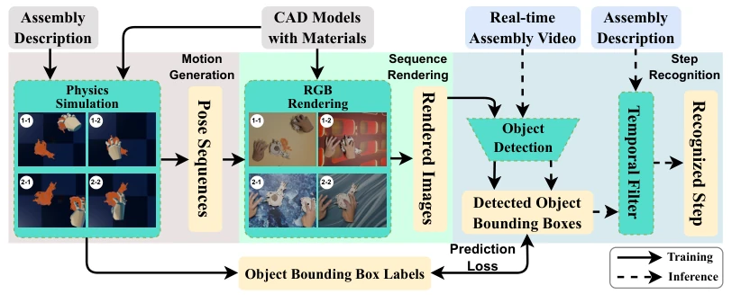
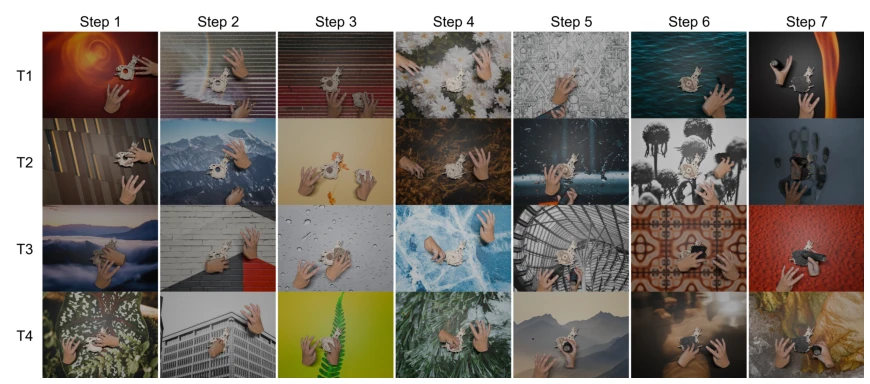
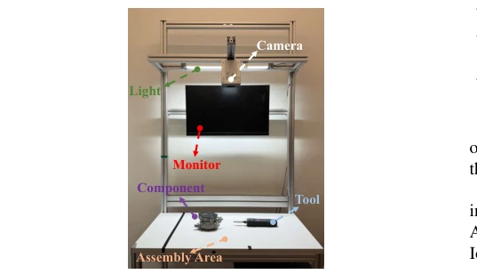
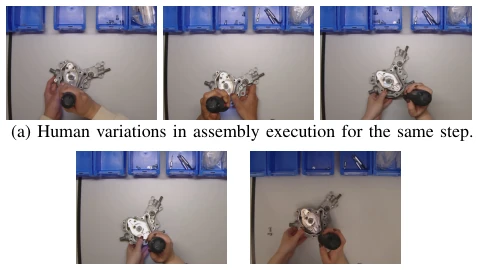

This paper serves as a reassuring 'synthetic data' pill for the industrial quality inspection field. The authors did not pursue flashy end-to-end large models, but instead steadfastly used CAD + physics simulation + YOLO, yet achieved 92.4% accuracy, far superior to pure classification models. The highlight lies in using a physics engine to simulate human-hand interaction, solving the pain point of previous synthetic data where 'hands are fake', successfully narrowing the sim-to-real gap. But there are also drawbacks: it still relies on CAD models and cannot learn from scratch; actions generated by physics simulation are still 'like' human, far from true dexterous manipulation; moreover, for subtle state changes like screw tightening, the system directly skips counting, which is 'focusing on the big and letting go of the small'. Overall, this is a pragmatic industrial deployment solution. Do not expect it to build rockets, but assembling a vacuum pump is sufficient, though its generalization ability for complex dynamic assembly still needs observation.
The core pain points of industrial assembly quality inspection lie in 'expensive data' and 'complex environment'. High-mix low-volume production modes require systems to adapt quickly, but traditional visual inspection relies on large amounts of real labeled data, with extremely high collection costs [1], [2]. Although existing research has attempted to use synthetic data [3], [4], [5], most are limited to static component rendering, ignoring the complex dynamic interactions and occlusions between hands, tools, and parts [3], [4], [5]. This leads to a huge domain gap (sim-to-real gap) between synthetic data and real scenes, making it difficult to cope with lighting changes, strategy differences among different operators, and severe occlusions in real factories. Therefore, how to generate high-quality synthetic data containing dynamic physical interactions at low cost, and achieve robust real-world transfer, has become a key problem that needs urgent solving, otherwise systems can only work in the lab and cannot go to the workshop.

Fig. 2: Pipeline. The pipeline consists of three modules: assembly motion generation, sequence rendering, and step recognition. During training, it takes assembly descriptions and CAD models with material properties as input, generates motions via physics simulation, renders RGB sequences in Blender [7], and trains a YOLO-based object detector [8] with bounding box annotations. During testing, the trained model processes real-time assembly videos and produces detection results, which are mapped to step completion using a rule-based temporal filter guided by the assembly description. Importantly, the pipeline is not tailored to a specific task and can be efficiently adapted to new assembly cases.
The overall system process is divided into two stages: training and inference. During training, input CAD models and assembly description JSON, generate physics simulation motion sequences, render as RGB images and auto-annotate; during inference, process real-time video streams. The core innovations lie in three modules: First is the physics-based motion generation module, extending the GraspXL [6] method, utilizing the RaiSim [34] simulator to simulate the dynamic process of hand grasping and assembly, ensuring hand-object interaction conforms to physical laws, rather than static posing, which directly improves the physical authenticity of the data. Second is the high-fidelity rendering module, using Blender [7] for domain randomization, randomizing lighting, background, motion blur, and hand occlusion, enhancing the model's generalization ability to real environment changes, preventing overfitting. Finally is the recognition module, training YOLOv8 [8] detector to locate parts and tools, combined with rule-based temporal filters (e.g., 8 out of 10 consecutive frames correct) to judge step completion, effectively suppressing detection noise. This 'detection + rules' approach is more robust to interference than end-to-end classification, and has fast inference speed, meeting real-time requirements.

Fig. 3: Example of the rendered images. We randomize the background and lighting conditions to simulate real-world variations. We also add random holding-hand occlusions, and apply motion blur and out-of-focus blur effects to simulate real camera artifacts. Each column represents an individual assembly step with four different time steps (T1-T4).
Experiments were conducted on the vacuum pump assembly task, involving 6 operators and different lighting conditions, totaling 53,569 real test images. Comparison baselines include detection without motion generation, without randomization rendering, without temporal check, and end-to-end classification models (trained on real/synthetic data). Results show that this method achieves 92.4% accuracy, significantly better than no motion generation (65.7%) and classification baseline (78.4%). Ablation experiments show that physics motion generation contributes the most (+26.7%), while domain randomization (+15.8%) and temporal filtering (17.4%) are also crucial. On the Framework laptop new task, only 25 minutes of configuration is needed to reach 94.7% accuracy, verifying generalization. Performance remains stable under lighting and personnel differences, proving system robustness. Detection precision reaches 97.38% on real data, recall 75.49%, although there is a gap, it is sufficient for practical use.
其他图片Other Figures

Fig. 4: The assembly environment.

Fig. 6: Visualization of assembly variations: (a) different individuals performing the same assembly step; (b) same individual performing under varying lighting conditions.